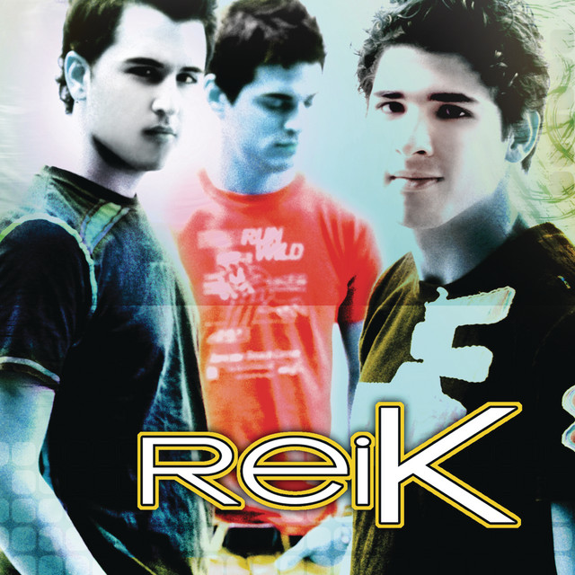

Música que te encanta
Porque sé que Mon Laferte es tu favorita, aquí tienes algunas de sus canciones.
Vendaval
Mon LaferteQuímica mayor
Mon LaferteEsto es amor
Mon LaferteGigante
Mon LaferteFlaco
Mon Laferte
Ojitos lindos
Bad BunnyHoneybee
Olivia Rodrigo
Bueno, supongo que es verdad
Que el tiempo puede sanar hasta las heridas más profundas
Y esos clichés que conocía
Parecían tan comunes cuando te vi
Caminemos en la oscuridad
Saltemos la cerca del parque
Mi chico, mi abejita de miel
Dios, me encanta la forma en que me miras
Y es demasiado difícil describir esto
De una manera que se sienta sincera
Pero incluso cuando me quedo callada
Te amo, cariño, lo prometo
Y espero nunca ver cómo se ve tu rostro al marcharte
Un rostro que juro que podría pasar toda mi vida conociendo
Brindo por esa esperanza
Ven por mí, acompáñame a casa
Y se siente como si Dios me hubiera dado un regalo
Dulce y pegajosa, como una mandarina
¿Te quedarías aquí haciéndome compañía?
En la oscuridad no tengo miedo
Solo extiendo la mano y ahí estás tú
Estrellas fugaces, autos veloces
Todo lo que tengo se siente como si fuera nuestro
Es demasiado difícil describir esto
De una manera que se sienta sincera
Pero incluso cuando me quedo callada
Te amo, cariño, lo prometo
Y espero nunca ver cómo se ve tu rostro al marcharte
Un rostro que juro que podría pasar toda mi vida conociendo
Brindo por esa esperanza
Espero nunca ver cómo se ve tu rostro al marcharte
Un rostro que juro que podría pasar toda mi vida conociendo
Brindo por esa esperanza
Es demasiado difícil describir esto
De una manera que se sienta sincera
Pero incluso cuando me quedo callada
Lo prometo
Y espero nunca ver cómo se ve tu rostro al marcharte
Un rostro que juro que podría pasar toda mi vida conociendo
Brindo por esa esperanza.
My one and only love
Mon Laferte